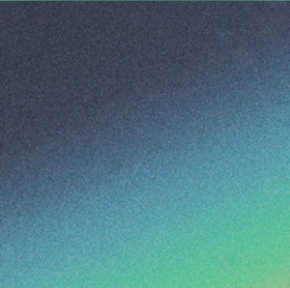
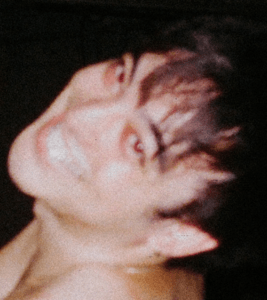

Quadeca is an American rapper, singer-songwriter and former Youtuber. He began releasing music in 2015 at the age of 14. He released 3 mixtapes before releasing a debut studio album in 2019 called "Voice Memos".
Quadeca's releases have elements of expertimental hip hop, R&B and pop rap. He gets his inspiration for his style from other musicians such as Joji, Frank Ocean, and Childish Gambino. These influences can be heard in all of his releases to date.
Albums
Personal Favorites
My favorite album that has been released by Quadeca is "From Me to You" because of the style of the music and how the whole album flows together. In specific, my favorite song from the album is "Sisyphus" because of the sound. My favorite song from all his releases is "knots" from the album "I Didn't Mean to Haunt You" because of the instrumentals and unique sound.
Quadeca's Newest Release "I Didn't Mean to Haunt You"
"Knots" from "I Didn't Mean to Haunt You"
Joji is a Japanese singer-songwriter, rapper, and former Youtube comedian. Before his music carreer, Joji was known for playing characters by the name "Filthy Frank" and "Pink Guy" on Youtube. Joji's music is a mix between R&B, lo-fi, and trip hop.
Music Career
From 2014-2017 Joji made comedic music under the name "Pink Guy". This music further portrayed this persona as a comedic character.
2015- present Joji began making serious and traditional music under this stage name. In 2017 Joji ceased production of Pink Guy and Filthy Frank, transitioning to making serious music as Joji.
Albums
Personal Favorites
My favorite album that has been released by Joji is "Ballads 1" because it was the first album I listened to by Joji. Ny favorite song of Joji's that has been released to date is "NO FUN" from the album "Ballads 1" because of the sound of the track.
Joji's Newest Release "SMITHEREENS"
My Favorite Joji Album
